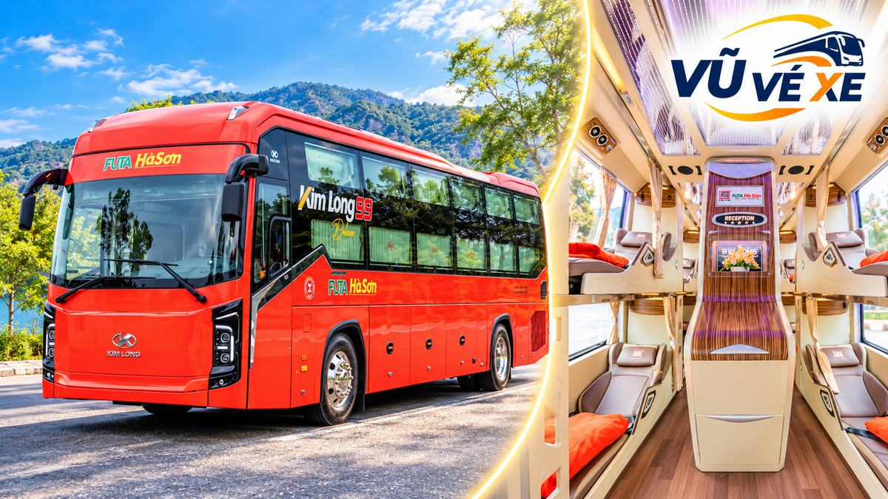
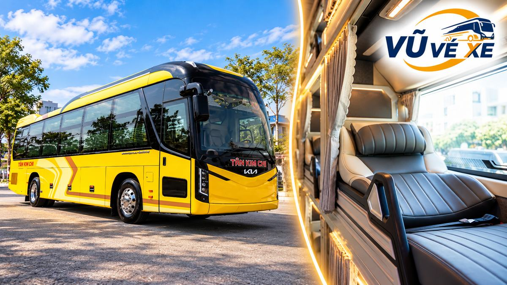
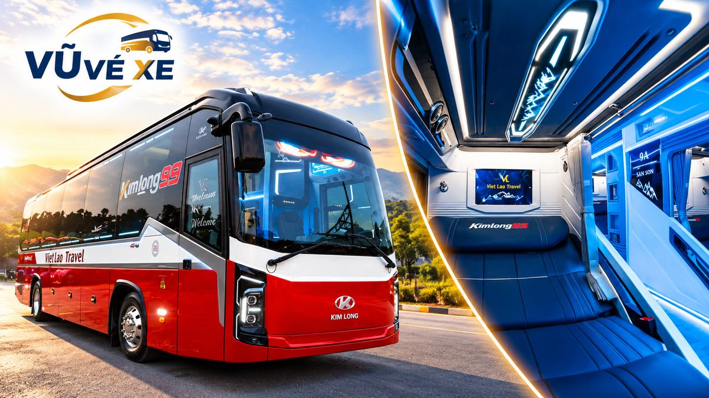
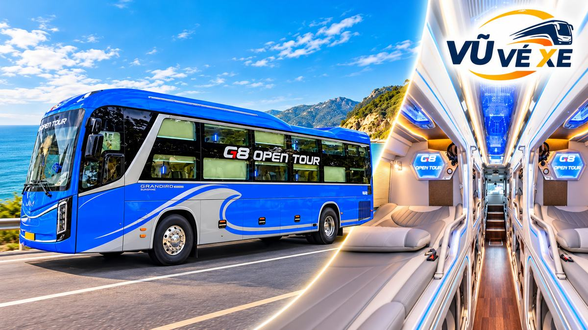
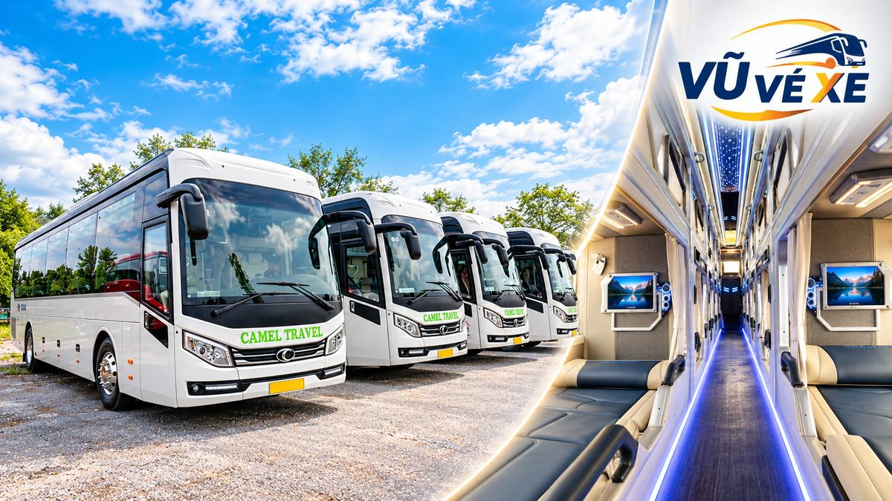
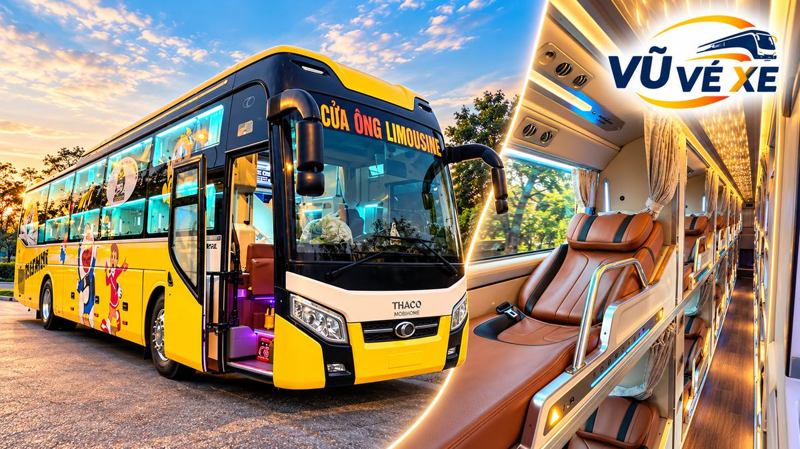

Trả lời nhanh: xe Đà Nẵng ra Hà Nội phần lớn chạy đêm, lên xe từ 17:30 đến khoảng 22:00 và tới Hà Nội từ 6 giờ sáng đến trưa hôm sau, mất khoảng 11–13 tiếng. Lịch ngày 22/10/2026 Vũ Vé Xe tra được còn có chuyến đầu giờ chiều (13:00–14:30, tới 04:20–06:45) và một chuyến ban ngày lúc 09:30. Giá tham khảo khoảng 500.000đ – 950.000đ tùy loại xe.
Mục lục
- Bảng tóm tắt 12 nhà xe
- Chi tiết từng nhà xe
- Nên đi chuyến mấy giờ?
- Giường 34 chỗ, xe phòng hay cabin?
- Xuống ở đâu tại Hà Nội?
- Chiều về: xe Hà Nội đi Đà Nẵng
- Câu hỏi thường gặp
Bảng tóm tắt: 12 nhà xe Đà Nẵng đi Hà Nội (lịch ngày 22/10/2026)
| Nhà xe | Loại xe | Giờ đón | Điểm đón | Giờ tới Hà Nội | Giá tham khảo | WC |
|---|---|---|---|---|---|---|
| FUTA Hà Sơn | Limousine 34 chỗ | 17:30 · 17:32 | Bến xe Trung tâm Đà Nẵng | 06:10 – 06:12 | 500.000đ | Hỏi khi đặt |
| Kim Chi | 34 phòng · 24 phòng VIP | 17:30 · 18:00 | Văn phòng nhà xe Đà Nẵng | 06:00 – 06:30 | 500.000 – 700.000đ | Hỏi khi đặt |
| Kim Chi 265 | Limousine giường 34 chỗ | 19:45 | Văn phòng nhà xe Đà Nẵng | 07:15 | 499.000đ | Hỏi khi đặt |
| Tân Kim Chi | Giường 34 · cabin 24 · 22 phòng | 20:15 – 21:35 | 46 Nam Trân | 06:15 – 08:35 | 550.000 – 700.000đ | Có (xe 22 phòng) |
| Việt Lào (Đà Nẵng) | 34 phòng VIP · 24 phòng VIP | 18:30 – 22:15 | VP Hội An · VP Hải Châu · bãi xe Việt Lào | 08:00 – 11:30 | 550.000 – 800.000đ | Hỏi khi đặt |
| HK Buslines | Giường phòng 22 chỗ | 16:00 · 21:00 · 22:00 | VP Hội An · VP Đà Nẵng | 07:00 – 12:00 | 850.000 – 950.000đ | Có |
| G8 Sapa Open Tour | Limousine giường 24 chỗ | 20:45 · 21:15 · 21:30 | VP 204 Hồ Nghinh | 09:35 – 10:20 | từ 900.000đ | Hỏi khi đặt |
| Văn Minh | Limousine 21 phòng | 09:30 · 14:30 · 21:45 | Bến xe Trung tâm Đà Nẵng | 23:20 · 05:10 · 10:45 | từ 850.000đ | Hỏi khi đặt |
| Queen Cafe | Giường 38 chỗ · 32 buồng · 22 phòng | 13:00 – 14:15 | VP Hội An · VP Đà Nẵng | 06:00 – 06:45 | 500.000 – 750.000đ | Có (xe 38 chỗ) |
| Camel Travel | Limousine 22 giường | 13:00 · 14:00 | VP Hội An · VP Đà Nẵng | 05:50 | 750.000đ | Hỏi khi đặt |
| Cửa Ông | Limousine 34 phòng | 14:30 | Đà Nẵng (hỏi điểm đón khi đặt) | 06:00 | 600.000 – 650.000đ | Hỏi khi đặt |
| Bình Tâm | Limousine 36 phòng | 13:30 · 14:30 | Dọc QL1A · Cây xăng cầu vượt Hòa Cầm | 04:20 | 507.600đ | Hỏi khi đặt |
Ngày 22/10/2026 tuyến có khoảng 181 chuyến của hơn 30 nhà xe; bảng chỉ gồm các chuyến Vũ Vé Xe đọc được, chưa phải toàn bộ. Giá đã trừ ưu đãi nếu có. Hội An, Tam Kỳ (Quảng Nam cũ) nay thuộc thành phố Đà Nẵng, nên nhiều nhà xe đón ở đây.
Giữ chỗ nhanh: nhắn Zalo 0386 003 098 hoặc gọi 0963 307 942, cho biết ngày đi, số người, bạn lên xe ở trung tâm Đà Nẵng, Hội An hay Tam Kỳ, và muốn xuống khu nào ở Hà Nội. Nhóm 4–7 người có thể hỏi thêm thuê xe riêng 4–7 chỗ cho đoạn ra bến hoặc đi tiếp.
Chi tiết các nhà xe Đà Nẵng đi Hà Nội
Tuyến này chủ yếu là xe đêm, nên thứ đáng so sánh là giờ tới (sáng sớm hay gần trưa) và khu xuống xe ở Hà Nội: phía nam (Giáp Bát, Nước Ngầm), phố cổ hay phía tây.
FUTA Hà Sơn – limousine 34 chỗ
Hai chuyến 17:30 và 17:32 tại Bến xe Trung tâm Đà Nẵng, chạy khoảng 12 tiếng 40 phút, tới Bến xe Giáp Bát lúc 06:10–06:12. Giá 500.000đ.

Đặt vé FUTA Hà Sơn: Zalo đặt vé · 0386 003 098 · 0963 307 942
Kim Chi – limousine 34 phòng và 24 phòng VIP
Đón tại văn phòng nhà xe ở Đà Nẵng: xe 34 phòng 17:30 (500.000đ), xe 24 phòng VIP 18:00 (từ 700.000đ). Cả hai tới Bến xe Nước Ngầm khoảng 06:00–06:30.
Đặt vé Kim Chi: Zalo đặt vé · 0386 003 098 · 0963 307 942
Kim Chi 265 – limousine giường nằm 34 chỗ
Chuyến 19:45 tại văn phòng nhà xe ở Đà Nẵng, tới quầy 65 Bến xe Nước Ngầm khoảng 07:15. Giá 499.000đ (giá gốc 550.000đ), thấp nhất trong các chuyến Vũ Vé Xe đọc được ngày này. Lưu ý đây là nhà xe khác với Kim Chi và Tân Kim Chi; khi đặt nên đọc đúng tên.
Đặt vé Kim Chi 265: Zalo đặt vé · 0386 003 098 · 0963 307 942
Tân Kim Chi – giường 34 chỗ mới, cabin 24 chỗ, 22 phòng Kim Long (WC)
Đón ở 46 Nam Trân. Xe 22 phòng Kim Long 20:25 tới khu đô thị Ao Sào khoảng 06:15; cabin 24 chỗ 20:15 tới quầy 67–69 Bến xe Nước Ngầm khoảng 06:45, chuyến 21:35 tới khu đô thị Pháp Vân khoảng 08:35 (từ 700.000đ, giá gốc 900.000đ). Giường 34 chỗ mới 21:15, tới Pháp Vân khoảng 08:15, giá 550.000đ.

Đặt vé Tân Kim Chi: Zalo đặt vé · 0386 003 098 · 0963 307 942
Việt Lào (Đà Nẵng) – limousine 34 phòng VIP và 24 phòng VIP
Nhiều điểm đón nhất danh sách. Xe 34 phòng: 18:30 ở văn phòng Hội An hoặc 19:15 ở văn phòng Hải Châu, tới văn phòng Hà Nội khoảng 08:00, giá 550.000đ (giá gốc 750.000đ). Xe 24 phòng (chuyến 21:00 từ Hội An) đón tiếp ở văn phòng Hải Châu 21:45, văn phòng bãi xe Việt Lào 22:00 và cây xăng Petrolimex số 35 (vòng xuyến Tạ Quang Bửu) 22:15; xuống Bến xe Giáp Bát khoảng 09:00, văn phòng Hà Nội khoảng 10:30 (từ 700.000đ) hoặc văn phòng 15 Hàng Muối khoảng 11:30 (từ 800.000đ).

Đặt vé Việt Lào: Zalo đặt vé · 0386 003 098 · 0963 307 942
HK Buslines – limousine giường phòng 22 chỗ (WC)
Trả ở văn phòng 70 Nguyễn Hữu Huân, ngay khu phố cổ. Chuyến 16:00 từ văn phòng Hội An tới khoảng 07:00; chuyến 21:00 từ Hội An hoặc 22:00 từ văn phòng Đà Nẵng tới khoảng 12:00. Giá 850.000–950.000đ.
Đặt vé HK Buslines: Zalo đặt vé · 0386 003 098 · 0963 307 942
G8 Sapa Open Tour – limousine giường 24 chỗ
Ba chuyến tối 20:45, 21:15, 21:30 tại văn phòng 204 Hồ Nghinh (gần biển, phía Sơn Trà), tới văn phòng 01 Lê Lai khoảng 09:35–10:20. Giá từ 900.000đ. Hợp với khách du lịch ở khu biển Mỹ Khê.

Đặt vé G8 Sapa Open Tour: Zalo đặt vé · 0386 003 098 · 0963 307 942
Văn Minh – limousine 21 phòng
Có chuyến ban ngày hiếm hoi: 09:30 tại Bến xe Trung tâm Đà Nẵng, tới Bến xe Nước Ngầm khoảng 23:20 cùng ngày. Hai chuyến khác 14:30 (tới 05:10) và 21:45 (tới 10:45). Giá từ 850.000đ.
Đặt vé Văn Minh: Zalo đặt vé · 0386 003 098 · 0963 307 942
Queen Cafe – giường nằm 38 chỗ (WC), 32 buồng, 22 phòng
Xuất phát từ văn phòng Hội An 13:00–13:45, đón tiếp ở văn phòng Đà Nẵng 14:00–14:15. Tới số 208 Trần Quang Khải khoảng 06:00–06:45. Giá: giường 38 chỗ 500.000đ, 32 buồng 550.000đ, 22 phòng 750.000đ.
Đặt vé Queen Cafe: Zalo đặt vé · 0386 003 098 · 0963 307 942
Camel Travel – limousine 22 giường
Đón 13:00 ở văn phòng Hội An hoặc 14:00 ở văn phòng Đà Nẵng, xe chạy qua Huế, tới văn phòng Hà Nội khoảng 05:50. Giá 750.000đ (giá gốc 800.000đ). Nhà xe có thông báo riêng về điểm đón trả, nên xác nhận lại khi giữ chỗ.

Đặt vé Camel Travel: Zalo đặt vé · 0386 003 098 · 0963 307 942
Cửa Ông – limousine 34 phòng
Hai thương hiệu Cửa Ông Bus và Cửa Ông Limousine cùng chạy 14:30 từ Đà Nẵng (xe từ Hội An lên), tới Hà Nội khoảng 06:00. Cửa Ông Bus trả ở 15 Hàng Muối (600.000đ), Cửa Ông Limousine trả ở số 5 Trần Vỹ (650.000đ). Điểm đón cụ thể ở Đà Nẵng hỏi khi đặt.

Đặt vé Cửa Ông: Zalo đặt vé · 0386 003 098 · 0963 307 942
Bình Tâm – limousine 36 phòng
Xe từ Quảng Ngãi ra, đón dọc Quốc lộ 1A đoạn Quảng Nam cũ lúc 13:30 và ở Cây xăng cầu vượt Hòa Cầm lúc 14:30. Tới văn phòng Hà Nội khoảng 04:20. Giá 507.600đ (giá gốc 540.000đ).
Đặt vé Bình Tâm: Zalo đặt vé · 0386 003 098 · 0963 307 942
Nhà xe khác cùng ngày: Thành Liên Buslines (22 phòng đôi, 17:00 Hội An / 18:00 văn phòng Đà Nẵng, tới khoảng 07:00, từ 650.000đ), Thành Trung Limousine (24 cabin, 20:00 văn phòng Đà Nẵng, tới VP 03 Lê Quang Đạo khoảng 09:00, 765.000đ), Phú Mỹ Hạnh (24 phòng, 16:00 Bến xe Tam Kỳ, tới Bến xe Nước Ngầm khoảng 07:00, từ 700.000đ), Thuận Hưng Travel (TH Travel, cabin đơn 24, đón khuya 23:00 ở 61 Nguyễn Tất Thành, tới khoảng 12:00, 710.000đ).
Nên đi chuyến mấy giờ?
- Đi 13:00–14:30, tới 04:20–06:45: tới Hà Nội trước giờ cao điểm, kịp chuyến xe đi Sapa, Hạ Long hay Ninh Bình buổi sáng. Nhược điểm: xuống xe khi trời còn tối.
- Đi 17:30–19:45, tới 06:00–08:00: khung phổ biến nhất, ngủ trọn đêm, tới vừa sáng.
- Đi 20:15–22:15, tới 08:15–12:00: tận dụng trọn ngày ở Đà Nẵng, tới Hà Nội cuối buổi sáng; chú ý tắc đường giờ cao điểm khi vào nội đô.
- Đi ban ngày 09:30, tới 23:20: cho người không ngủ được trên xe.
Hỏi trước giờ dự kiến tới nơi và xe có nhà vệ sinh không nếu đi cùng trẻ nhỏ.
Giường 34 chỗ, xe phòng hay cabin?
- Giường nằm 34–38 chỗ (499.000–550.000đ): rẻ, nhiều giờ chạy. Đêm 11–12 tiếng vẫn ngủ được nếu chọn giường tầng dưới.
- Xe 32–36 phòng (507.000–650.000đ): có rèm che, riêng tư hơn mà giá chỉ nhỉnh hơn giường thường.
- Cabin 24 chỗ, 21–22 phòng (700.000–950.000đ): rộng, yên tĩnh, nhiều xe có WC; hợp người lớn tuổi, người cần ngủ sâu để làm việc ngay sáng hôm sau. Hỏi rõ loại phòng trước khi chọn.
Xuống ở đâu tại Hà Nội?
Chọn đúng điểm trả giúp bớt một chặng taxi giữa giờ cao điểm:
- Phía nam (Giáp Bát, Nước Ngầm, Pháp Vân, Ao Sào): FUTA Hà Sơn, Kim Chi, Kim Chi 265, Tân Kim Chi, Văn Minh, Phú Mỹ Hạnh, một số chuyến Việt Lào. Tiện nếu bạn ở khu Hoàng Mai, Thanh Trì hoặc đi tiếp về Hà Nam, Nam Định.
- Khu phố cổ, Hoàn Kiếm (Nguyễn Hữu Huân, Hàng Muối, Trần Quang Khải, Lê Lai): HK Buslines, Cửa Ông Bus, Queen Cafe, G8, Việt Lào chuyến tới Hàng Muối. Hợp khách du lịch.
- Phía tây (Lê Quang Đạo, Trần Vỹ): Thành Trung, Cửa Ông Limousine. Gần Mỹ Đình, Cầu Giấy.
- "Văn phòng Hà Nội" chưa ghi địa chỉ: Việt Lào, Camel Travel, Bình Tâm, Thành Liên — hỏi địa chỉ khi giữ chỗ.
Nên hỏi điểm trả cuối cùng và xe trung chuyển nếu điểm xuống xa nơi bạn ở.
Chiều về: xe Hà Nội đi Đà Nẵng
Ngày 22/10/2026 chiều Hà Nội → Đà Nẵng có khoảng 217 chuyến. Các chuyến Vũ Vé Xe đọc được (chưa phải toàn bộ):
- Đi chiều, tới sáng sớm: Duy Khánh Limousine 16:45 từ văn phòng 15 Hàng Muối, tới văn phòng 217 Hồ Nghinh khoảng 09:00 (cabin đôi, từ 756.000đ). FUTA Hà Sơn 17:30 / 17:32 từ Bến xe Giáp Bát, tới Bến xe Trung tâm Đà Nẵng khoảng 06:10 (500.000đ). Kim Chi 18:00 từ Bến xe Nước Ngầm, tới văn phòng Đà Nẵng khoảng 05:45 (500.000đ). Văn Minh 18:05 từ Bến xe Nước Ngầm, tới Bến xe Trung tâm Đà Nẵng khoảng 07:05 (từ 850.000đ). Kim Chi 265 18:30 từ quầy 65 Bến xe Nước Ngầm, tới khoảng 07:00 (499.000đ). Việt Lào 18:30 từ văn phòng Hà Nội, tới văn phòng Hải Châu khoảng 06:45 (550.000đ).
- Đi tối: HK Buslines 19:30 từ 70 Nguyễn Hữu Huân, tới văn phòng Đà Nẵng khoảng 09:30 (từ 850.000đ). G8 Sapa Open Tour 20:00 / 20:30 từ 01 Lê Lai, tới 204 Hồ Nghinh khoảng 08:55–09:25 (từ 900.000đ). TNT Travel Bus 20:00 từ 15 Hàng Muối, tới 67 Nguyễn Tất Thành khoảng 09:00 (836.000đ). Tân Kim Chi 20:15 từ quầy 67–69 Bến xe Nước Ngầm hoặc 21:35 từ Pháp Vân, tới 46 Nam Trân khoảng 07:30–09:20 (từ 700.000đ). Thành Trung 21:00 từ 03 Lê Quang Đạo, tới khoảng 12:30 (765.000đ).
- Đi khuya: Văn Minh 22:00 từ Bến xe Nước Ngầm, tới khoảng 11:00. Việt Lào 22:00 từ văn phòng Hà Nội, tới văn phòng Hải Châu khoảng 10:15 (từ 700.000đ).
- Đi ban ngày: TNT Travel Bus 08:00 từ 3 Lê Quang Đạo, tới 37 Dương Tự Minh khoảng 23:30 (34 phòng, 665.000đ).
Nếu quay lại trong tuần, giữ chỗ chiều về cùng lúc với chiều đi. Muốn dừng ở Quảng Trị để ra đảo, xem lịch trình đảo Cồn Cỏ bằng xe khách. Chưa rõ nên xuống điểm nào khi về Đà Nẵng, xem xe khách vào Đà Nẵng xuống ở đâu.
Chuẩn bị cho chặng Đà Nẵng – Hà Nội
- Tới điểm đón trước 15–20 phút; xe đón dọc đường thì giữ máy và đứng ở chỗ dễ thấy.
- Tháng 11 đến tháng 2 Hà Nội lạnh hơn Đà Nẵng nhiều, mang áo ấm để mặc khi xuống xe lúc sáng sớm (chuẩn bị áo khoác).
- Giấy tờ, tiền để trong túi nhỏ bên người, không để trong khoang hành lý.
Đặt vé Đà Nẵng ⇄ Hà Nội qua Zalo
Nhắn Vũ Vé Xe ngày đi, số người, nơi muốn lên xe (trung tâm, Sơn Trà, Hội An, Tam Kỳ), khu muốn xuống ở Hà Nội và loại xe bạn thích. Vũ Vé Xe kiểm tra chuyến còn chỗ, gửi giờ đón, điểm trả, giá; bạn đồng ý mới giữ chỗ.
💬 Nhắn Zalo đặt vé 📞 0386 003 098 📞 0963 307 942
Xem thêm: trang tuyến Đà Nẵng – Hà Nội · trang tuyến Hà Nội – Đà Nẵng · xe Đà Nẵng đi Sài Gòn · ăn uống và dừng nghỉ trên xe đường dài · mẹo đi xe khách.
Câu hỏi thường gặp
Xe Đà Nẵng đi Hà Nội mất bao lâu?
Đa số chuyến xe tối trong lịch ngày 22/10/2026 chạy khoảng 11 đến 13 tiếng. Xe đón từ Hội An, Tam Kỳ hoặc chạy ban ngày có thể mất 14 đến 17 tiếng.
Giá vé xe Đà Nẵng đi Hà Nội bao nhiêu?
Tham khảo ngày 22/10/2026: giường nằm 34 chỗ khoảng 499.000–550.000đ, xe 34–36 phòng khoảng 507.000–650.000đ, cabin 24 chỗ hoặc 22 phòng khoảng 700.000–950.000đ. Giá có thể khác theo ngày đi, chương trình giảm giá và dịp lễ, Tết.
Xe Đà Nẵng ra Hà Nội trả khách ở đâu?
Nhiều xe trả ở phía nam Hà Nội như Bến xe Giáp Bát, Bến xe Nước Ngầm, khu đô thị Pháp Vân. Một số nhà xe trả ở văn phòng trong phố cổ như Nguyễn Hữu Huân, Hàng Muối, Trần Quang Khải, Lê Lai, hoặc phía tây như Lê Quang Đạo, Trần Vỹ.
Có xe Đà Nẵng đi Hà Nội chạy ban ngày không?
Có. Trong lịch ngày 22/10/2026, Văn Minh chạy 09:30 từ Bến xe Trung tâm Đà Nẵng, tới Bến xe Nước Ngầm khoảng 23:20 cùng ngày. Nhiều chuyến khác đón từ 13:00–14:30 và tới Hà Nội sáng sớm hôm sau.
Ở Hội An có xe đi Hà Nội không?
Có. Việt Lào, HK Buslines, Queen Cafe, Camel Travel và Thành Liên đón tại văn phòng Hội An theo lịch ngày 22/10/2026, giờ đón từ 13:00 đến 21:00.
Từ Hà Nội vào Đà Nẵng nên đi chuyến nào?
Muốn tới Đà Nẵng sáng sớm, chọn chuyến 17:30–18:30 từ Bến xe Giáp Bát hoặc Nước Ngầm (tới khoảng 05:45–07:05). Chuyến 20:00–22:00 tới Đà Nẵng khoảng 9 giờ đến trưa hôm sau.
Liên hệ Vũ Vé Xe
Gọi hoặc nhắn Zalo cho Vũ Vé Xe qua số 0386 003 098 · 0963 307 942. Lịch và giá trong bài để tham khảo; thông tin đúng cho chuyến của bạn là thông tin nhà xe xác nhận khi giữ vé.